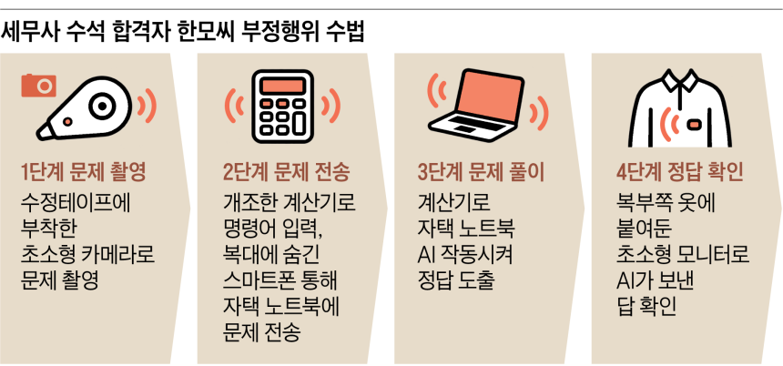

수정 테이프에 카메라 부착해 촬영
개조 계산기·휴대폰으로 문제 전송
정답은 자택 노트북의 AI가 보내줘

원본보기
https://n.news.naver.com/article/comment/023/0004010488
그래픽=박상훈
수정 테이프에 카메라 부착해 촬영
개조 계산기·휴대폰으로 문제 전송
정답은 자택 노트북의 AI가 보내줘

원본보기
https://n.news.naver.com/article/comment/023/0004010488
그래픽=박상훈
계산기는 출력장치도 아니었다고?
옷에붙인 모니터는 뭐야
아니 존나 복잡하네ㅋㅋㅋㅋ 노트북 켜둔 이유는 로컬 모델인건가?
노트북으로 사진보내서 ai에 문제 보낸거지
ai에 문제 보내는건 폰으로도 할수있음
계산기는 찍은사진 업로드 하는 용도가 아닐까함 그리고 노트북은 사진 업로드하면 ai로 문제풀이하고 답은 초소형 모니터로 전송한듯?? 폰은 뭐 그냥 테더링으로 썻거나 안쓴거같은데
원격으로 파일전송한거같음
저걸 어케한거지? 계산기로 원격조정하게 프로그래밍 다 한건가? 그러면 뭐 os? 코딩? 뭘해야하냐 컴맹이라
귀엽다
계산기 개조하는건 유튜브에 차고 넘침
프로그래밍 같은건 ai한태 시키면 컴맹도 할수있음
어느정도 프로그래밍을 알고 있어서 자체적으로 ai로 만든듯
만드는거 자체는 그렇게 어렵지 않음 대신 현장에서 문제 없이 실행되게 하는게 조금 까다로움 궁금하면 만드는법 자세하게 설명해줄테니깐 댓글 다셈
댓글
일단 계산기는 카메라 촬영버튼이라 생각하면 됨 카메라랑 계산기랑 통신(아마 블루투스)해서 계산기 버튼을 누르면 촬영 + 노트북으로 촬영된 사진을 전송함 노트북은 지정된 위치에 사진이 들어오면 해당 사진과 미리 작성한 프롬프트(문제를 풀어달라)를 이용해서 정답을 출력함 여기서 정답은 단순한 답변이 아닌 MCP라고 정해진 규격(객관식이면 4 이런식)으로 출력하게해서 초소형 모니터로 전송하면 끝
구현 자체는 전산 조금 만져본 사람이면 시도해볼만함 쟤는 아마 브로커를 통해 가져왔으니 업체가 보내준 프로그램 노트북에 설치하고 설정만 조금 만져줬을꺼임 조금 까다로운 부분은 초소형 카메라는 시야각 화질이 안좋아서 정확한 각도와 위치에서 전체 문제를 찍는 부분하고 문제를 찍고 답변를 받은데까지의 시간을 잘 파악하야하는건데 이건 아마 여러번 연습했을꺼임 그래서 당장 초짜가 장비만 들고 간다고해서 쉽게 되지는 않음
댓글!
위에 씀
매번 모니터로 정답 확인했는데 감독관이 못 봤다고?
심지어 감독관 바로앞 ㅋㅋ
등잔 밑이 어두웠네
ㅈㄴ 철저하네
결국 잡아낸거네
복부에 있는 초소형 모니터로 답을 어떠케확인하지?
업계기밀
내 뇌피셜로는 행커칩다는 작은 주머니안쪽에 붙여놓은게 아닐까?
남이보면 안보이는데 내가 아래로 내려다 보면 보일테니까
본문 이미지도 딱 그 위치인듯
나의 뇌피셜정도는 되어야지 훗
노팬티로 바지지퍼 내린채로있다가 꽈추 끝에 스마트밴드 달고 세웠다 눕혔다 하면서 본건데 이걸 표현하기 그러니 복부라한듯ㅋㅋㅋ
금욕 한달해서 언제든 세울수있는상태를 만드는게 관건인듯
시험다보고나서 화장실가서 똥휴지에 스마트워치 싸서버리고
모임에서 입만 열면 갑분싸 되는 경험 해보신적 많죠 ?
님 님은 왜 닉값 못함ㅋㅋ
아니 저렇게 준비해놓고 점수 만점말고 적당히 맞을 생각은 안했네...
상상을 초월하는구만
e-ink 같이 빛 안나는 디스플레이 쓴건가? ㄷㄷ
적당히 틀리게 써서 안걸린사람들 존나 수두룩하겠네ㅋㅋ 이야.. 무섭다 세상.. 기술과 인공지능의발달.. 악용..
5090노트북이라 쳐도 vram 24기가인데 고작 24기가에 다 올라가는 모델로 세무사 수석이 가능한거네
사랑해
Qwen 젬마 둘다 안될거 같고 로컬 아니라 노트북에서 고성능 클로드 같은 거 접속한 거 같음
아 노트북은 중계 에이전트만 돌린거일수도 있겠네. 24기가로 qwen이나 젬마 27b q4는 돌아가니까 그거로 세무사 수석 가능한가 했음
만약에 로컬로 했다고 하면 상당한 수준의 교재를 사전 학습시켜 줬어야 할 건데 저 친구 기술 씨 좀 보면 했을 수도 있을 것 같긴 해
와 ㅅㅂ
솔직히 세무냥이 능지보면 이렇게 해주는 업체가 있다고 본다
업체가 지금 이용자들한테 돈뜯는중이라던데
뭔 ㅅㅂ 첩보영화를 찍었네
생각해보니 이런 어정쩡한애들도 이렇게 몰래하는데
국정원같은데서 하는거면 아예모르겠다 ㄷㄷ
감독관 모가지...
내가 볼 때는 만점받을 줄 모르고 그냥 풀었을듯
보통 ai 돌려도 문제 틀리는 경우가 간간히 있고
카메라 성능 및 본인이 계산기에 잘못 입력해서
정답을 잘못 도출했을 것을 고려하고
아마 예를 들어 10문제 중 최대 5문제정도는 틀릴거라
짐작했겠지
대단한데?